Contexto Histórico Social
El Romanticismo llegó a América Latina a principios del siglo XIX, en un contexto marcado por las luchas independentistas contra el dominio colonial español y portugués. Este movimiento literario se desarrolló paralelamente a la formación de las nuevas repúblicas y la búsqueda de identidades nacionales.
Los escritores románticos latinoamericanos se inspiraron en los paisajes locales, las culturas indígenas y los conflictos sociales de la época, fusionando influencias europeas con elementos autóctonos para crear una literatura distintivamente americana.
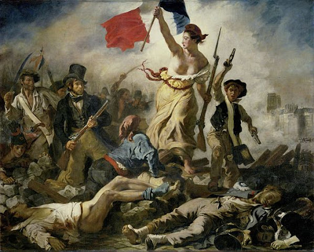
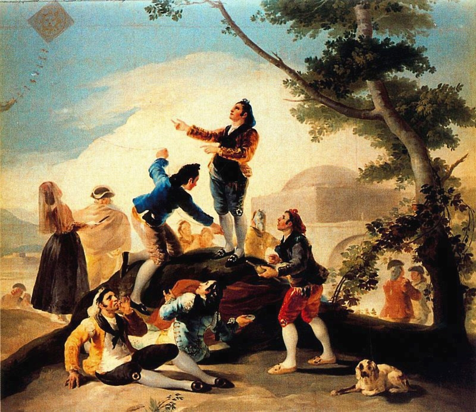
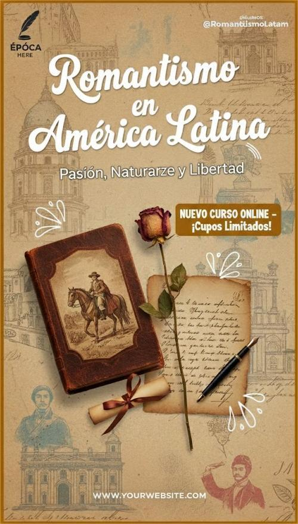
Finales del siglo XVIII
Influencia de la Ilustración y las ideas revolucionarias que preparan el terreno para la independencia.
1810-1825
Procesos de independencia en la mayoría de los países latinoamericanos.
1830-1860
Consolidación del Romanticismo como movimiento literario predominante en América Latina.
Segunda mitad del siglo XIX
Transición hacia el Realismo y el Modernismo, aunque el Romanticismo mantiene influencia.
Características del Romanticismo Latinoamericano
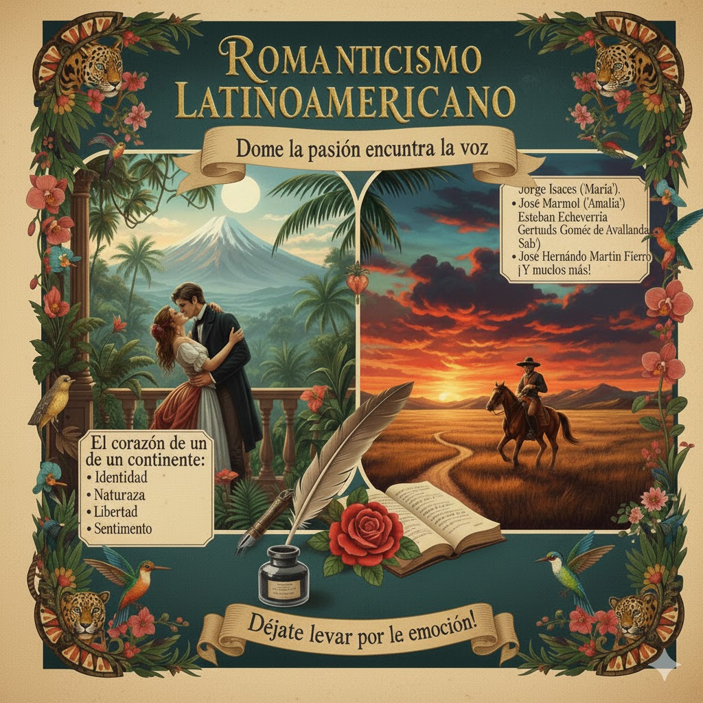
Representación del espíritu romántico latinoamericano
Estilo y Temáticas
Los escritores románticos latinoamericanos desarrollaron un estilo caracterizado por:
- Exaltación de la naturaleza americana: Descripciones detalladas de paisajes, flora y fauna locales.
- Nacionalismo: Búsqueda de identidades nacionales y exaltación de los héroes independentistas.
- Incorporación de lo indígena: Revalorización de las culturas precolombinas y sus tradiciones.
- Sentimentalismo: Énfasis en las emociones, el amor apasionado y la melancolía.
- Libertad creativa: Ruptura con las reglas clásicas y defensa de la inspiración individual.
- Denuncia social: Crítica a la esclavitud, las desigualdades y los conflictos políticos.
Visión del Individuo y la Emoción
Los románticos latinoamericanos desarrollaron una concepción profunda del ser humano y su mundo interior, destacando:
- Subjetividad: Valoración de la experiencia personal, los sentimientos y la mirada individual del autor.
- Héroe romántico: Protagonistas inconformes, sensibles y en conflicto con la sociedad.
- Amor idealizado: Representación del amor como fuerza transformadora, apasionada e imposible.
- Melancolía y nostalgia: Uso frecuente de la tristeza, los recuerdos y la contemplación interior.
- Libertad creativa: Ruptura con las reglas clásicas y defensa de la inspiración individual.
- Búsqueda existencial: Reflexión sobre el sentido de la vida, la libertad y la identidad del individuo.
Principales Representantes


Obras Principales del Romanticismo
Las 6 obras más relevantes del Romanticismo en América Latina
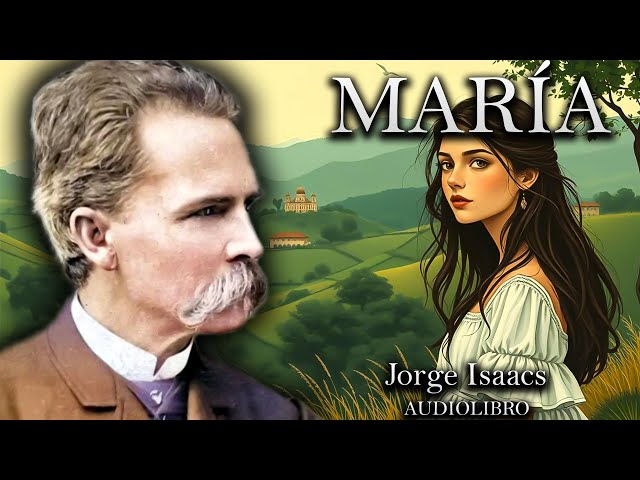
"María"
La novela romántica por excelencia de Hispanoamérica, que narra el amor imposible entre María y Efraín.
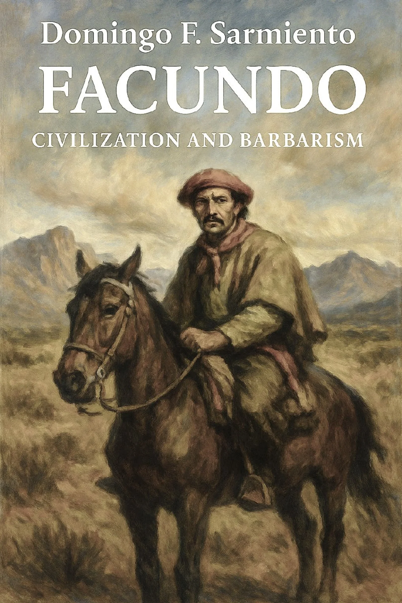
"Facundo"
Ensayo político que analiza el caudillismo y la dicotomía entre civilización y barbarie.
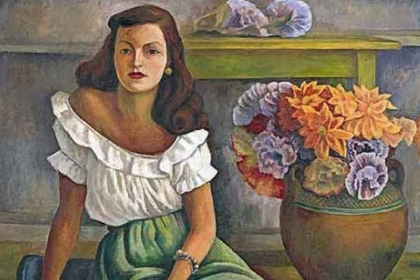
"Amalia"
Novela que combina romance y crítica política durante el régimen de Juan Manuel de Rosas.
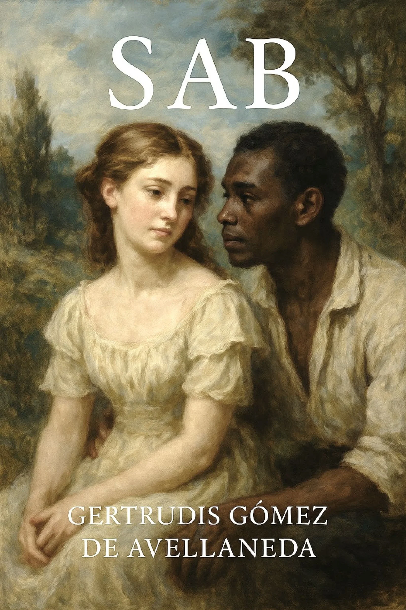
"Sab"
Novela antiesclavista que narra la historia de un esclavo mulato enamorado de su ama.
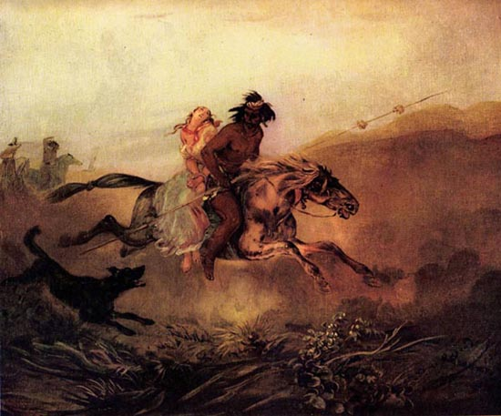
"La Cautiva"
Poema narrativo que relata el amor entre una mujer cautiva por indígenas y su esposo.
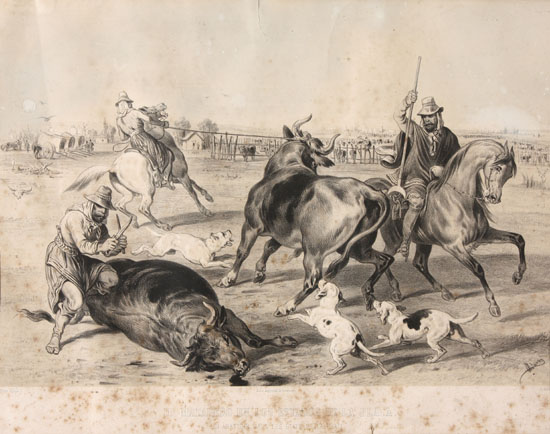
"El Matadero"
Primer cuento realista argentino, crítica al régimen de Rosas a través de una alegoría.
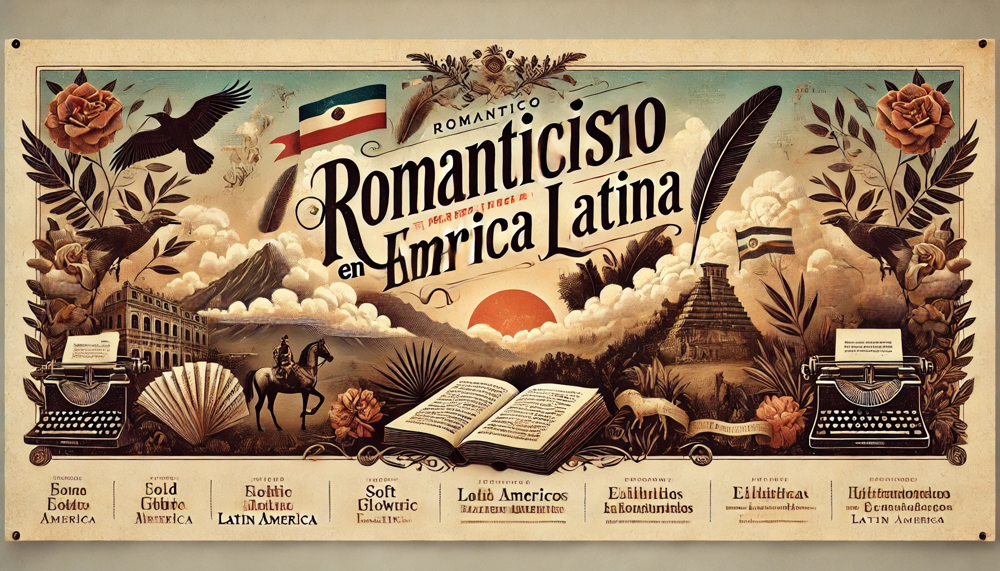
Fragmento de Obra Importante
"María era morena; sus ojos, de un negro profundo, tenían esa expresión de ternura y de tristeza que hace amar y compadecer a un tiempo; su frente era lisa y blanca como el alabastro; su nariz, recta y perfectamente delineada; su boca, pequeña y de un rojo pálido; su cabello, castaño oscuro, cayendo en bucles sobre sus hombros, semejaba a esos velos de gasa con que los pintores cubren a las vírgenes."
Análisis del Fragmento
Este fragmento inicial de "María" ejemplifica perfectamente las características del Romanticismo latinoamericano:
- Idealización de la mujer: María es descrita con rasgos casi divinos, propia del amor idealizado romántico.
- Sentimentalismo: La combinación de ternura y tristeza en su mirada anticipa el tono melancólico de la obra.
- Comparaciones poéticas: La referencia a "velos de gasa" y "vírgenes" conecta con la tradición religiosa y artística.
- Lenguaje sensorial: Descripciones detalladas que apelan a la vista y evocan emociones.
"María" se convirtió en la novela romántica por excelencia de Hispanoamérica, combinando el drama amoroso con descripciones del paisaje colombiano y reflexiones sobre la identidad nacional.